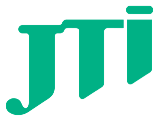
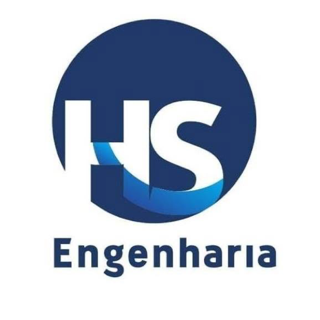
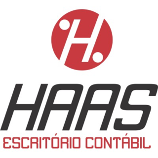
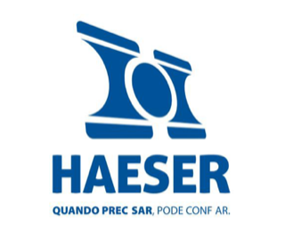
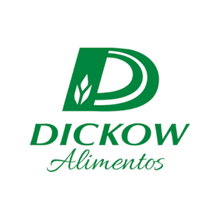
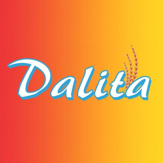
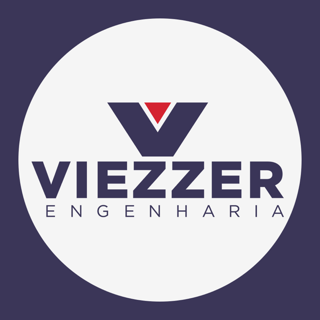
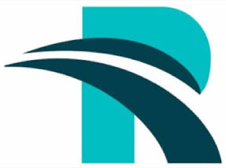

Tudo passa por você
A equipe espera sua aprovação para quase tudo. Você vira o gargalo e não consegue se afastar nem nas férias.
Organização. Decisão. Crescimento.
Eu ajudo a sua empresa a sair do improviso, mostrando o que realmente importa acompanhar e garantindo que a sua estratégia esteja alinhada com a sua operação.
Sou Marina Melo Haas, administradora e consultora. Em mais de 7 anos, acompanhei mais de 100 empresas de serviços, indústria e comércio.

Clientes









Para quem é
Trabalho com donos de pequenas e médias empresas que já construíram um negócio de verdade, mas sentem que ele ainda depende demais da intuição, da memória e da capacidade de resolver tudo pessoalmente.
A equipe espera sua aprovação para quase tudo. Você vira o gargalo e não consegue se afastar nem nas férias.
Os números chegam tarde ou não dizem nada. A decisão sai no feeling, e o problema só aparece quando já virou prejuízo.
As prioridades mudam toda semana, e o crescimento fica para o ano que vem, todo ano.
As pessoas trabalham muito, mas ninguém sabe ao certo o que é de quem. O retrabalho consome horas da equipe e a paciência do cliente.
O custo de continuar assim
Quantas horas por semana você passa apagando incêndio?
Quanto já custou uma decisão tomada sem o número certo?
O que ficou para depois este ano por falta de tempo?
Cada mês no improviso repete esse custo.
Quero mudar isso na minha empresaO método
Três pilares que sustentam uma empresa bem gerida, trabalhando juntos na rotina: processos, dados e estratégia.
Toque em cada pilar para explorar
A transformação
Como funciona
Começa na operação. A estratégia vem por último, de propósito: ninguém planeja o futuro com números em que não confia. Por isso, primeiro a casa em ordem, um processo de cada vez, no ritmo da sua empresa.
Você ganha um retrato claro da empresa. Mergulhamos na operação, ouvimos você e sua equipe e identificamos os principais desafios em processos, dados e estratégia.
A operação para de depender de você. Mapeamos atividades, gargalos e responsabilidades e padronizamos o jeito certo de fazer, para a equipe ganhar autonomia.
Você passa a decidir com números. Organizamos e analisamos os principais dados do negócio para acompanhar o desempenho, entender a rentabilidade e encontrar onde melhorar.
A visão vira plano executado. Definimos objetivos, prioridades e planos de ação alinhados à realidade do negócio e acompanhamos a execução até o resultado.
O diferencial
Eu acompanho de perto e cobro a execução, para que o combinado saia do papel.
Exemplo de plano de ação em andamento
Eu provoco, acompanho e cobro. Você colhe.
Agendar conversa de diagnósticoFormato
Atendo empresas de qualquer lugar do Brasil, com encontros presenciais ou a distância e acompanhamento próximo entre eles.
O início tem um compromisso de 6 meses, o tempo necessário para organizar a base e para as mudanças se firmarem na rotina.
A partir daí, o acompanhamento é mensal e pode ser encerrado quando você quiser, com aviso de 30 dias. Investimento mensal fixo, sem surpresas.
Todo empresário tem visão, conhece seu negócio e sabe onde quer chegar. Mas, muitas vezes, falta alguém ao seu lado para transformar ideias em planejamento e planejamento em execução.
É aí que eu entro: trazendo método para a gestão, organização para a operação e acompanhamento para fazer as coisas acontecerem na prática.

Quem sou
Sou Marina Melo Haas, administradora e consultora empresarial. Ao longo de mais de 7 anos, acompanhei mais de 100 empresas dos setores de serviços, indústria e comércio.
Minha trajetória une conhecimento técnico e experiência prática na gestão empresarial. Atuo na organização de processos, na análise de resultados e no desenvolvimento de soluções que ajudam empresários a tomar decisões com mais clareza e segurança.
Acredito que uma boa gestão vai além do planejamento. Ela precisa funcionar na prática, acompanhar a realidade do negócio e criar condições para um crescimento sustentável.
Outros produtos
Objetivos, metas e um plano de ação claro para os próximos passos do negócio.
Saiba mais →Capacitações práticas em gestão e liderança para líderes e equipes.
Treinamentos in company, desenhados a partir da realidade da sua empresa. Os temas podem incluir organização e padronização de processos, análise de dados e indicadores, gestão financeira, planejamento e liderança. São encontros práticos, com exemplos do dia a dia e exercícios aplicados, para que a equipe saia pronta para colocar o conteúdo em prática.
Quero um treinamento →Conteúdos sobre gestão e liderança para eventos e empresas.
Palestras para eventos, associações, encontros empresariais e equipes, sobre gestão, liderança e organização. O conteúdo é direto, com linguagem acessível e exemplos reais, e é adaptado ao público e ao formato do evento, de uma fala curta a uma participação mais aprofundada.
Quero uma palestra →Na primeira conversa, entendo o momento do seu negócio e mostro como a Tríade pode ser aplicada na sua realidade. Sem compromisso.
Agendar pelo WhatsApp